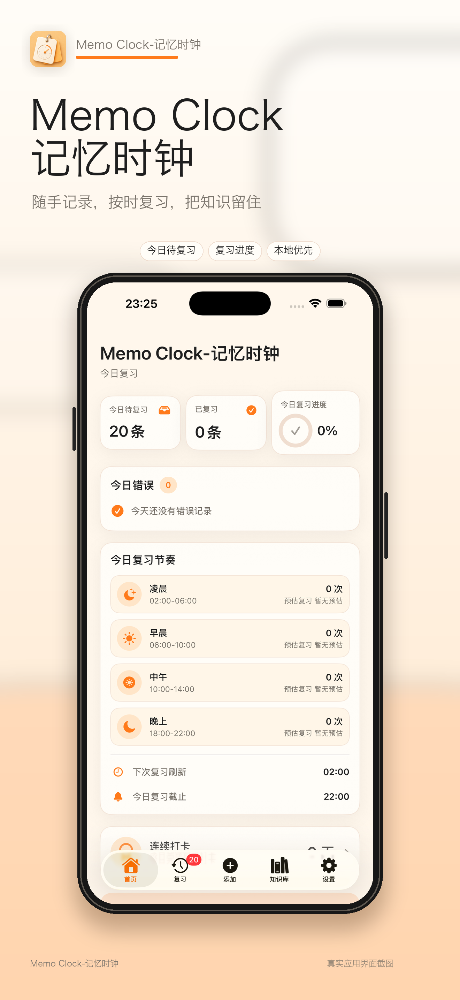
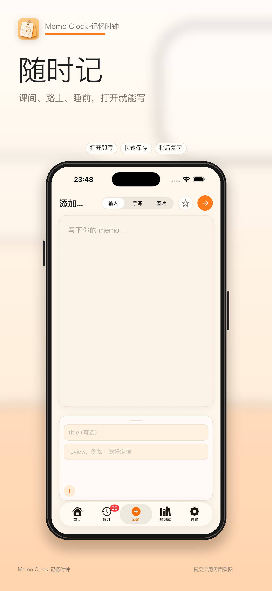
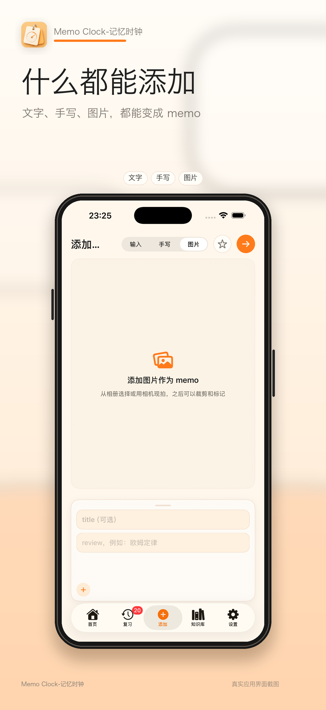
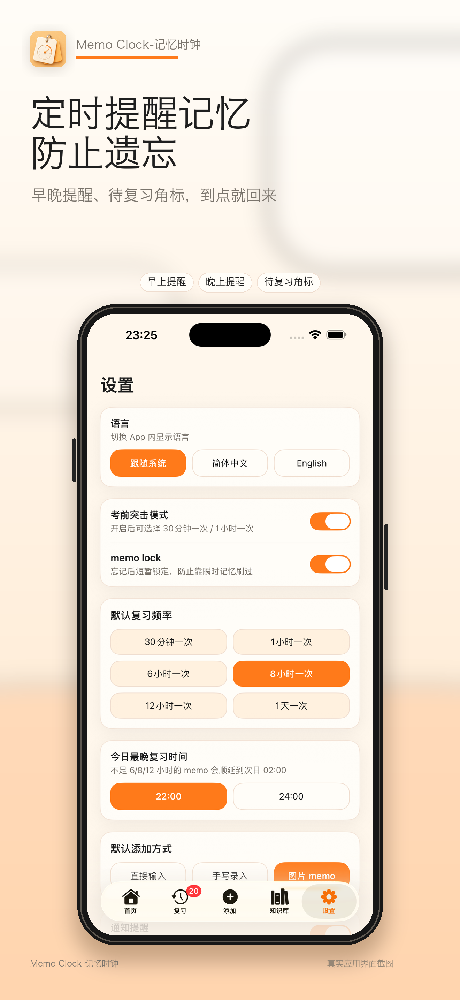
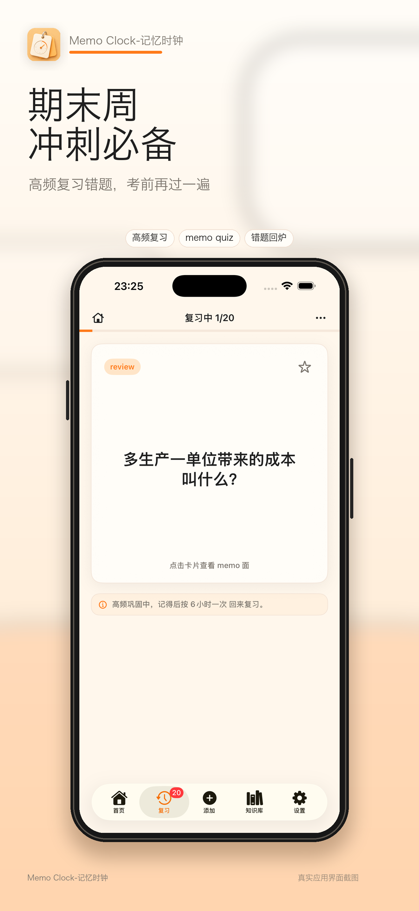

Memo Clock-记忆时钟
随手记录，按时复习，把知识留住
简单好用的 memo 记录与复习工具，适合课堂重点、错题、公式、知识点和临时想到的内容。

Memo Clock-记忆时钟是一款简单好用的 memo 记录与复习工具，适合把课堂重点、错题、公式、知识点和临时想到的内容快速保存下来。你可以随时记录，也可以添加文字、手写内容或图片 memo，把零散知识整理成可复习的卡片，尤其适合理科生的公式复习，以及题型复习。
App 会按照你设置的复习频率和提醒时间，把该看的内容准时推回来，帮助减少“记过但忘了”的情况。操作轻量直观，没有复杂学习成本，打开就能记，到了时间就复习。
尤其适合期末周冲刺，把易错点、高频考点和临考重点集中管理，考前再过一遍，让复习更有节奏。



